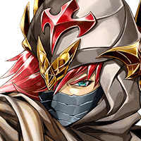
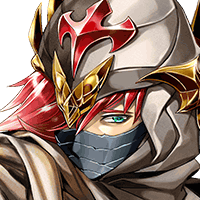

クェイド
だけど、今回は俺１人で 魔神ラグルヴォード討伐に向かう。
クェイド
みんなは神の使いの言葉に従って グランガイアに戻ってくれ。
ファダル
お前、自分が何を言っているのか わかっているのか？
ファダル
大方、この地の危険さを考えて 俺たちを帰そうとしているのだろう？
クェイド
ハハハッ、さすがファダル。 なんでもお見通しだな。
ファダル
３人というのは、どんな状況でも 対応できるであろう最低人数だ。


ファダル
すべての任務を完遂するために ３人、３人の２組に分かれる。
ファダル
それと、カルナ・マスタ様のもとへ 向かうのは俺たちにさせてもらう。
ファダル
俺はこの話を“神の使い”と名乗る方から 聞かされた。
ファダル
事実、その方からはそれにふさわしい 威厳と力を感じた。
ファダル
だがその一方で、魔神ラグルヴォード討伐に ついては何も語られなかった。
ファダル
あの方を疑うわけではないし、 上手く説明することもできないんだが……。
ファダル
この帰還命令に 何か違和感を感じているのも確かだ……。
クェイド
ファダルが神の使いの言葉に 疑いを持つなんて……。
ファダル
俺にとってこの生命を救ってくれた 神の言葉は絶対だ。
ファダル
だが、お前と一緒にいた時間が長いせいで 疑り深くなってしまってな。
ファダル
クレア、クルト、そういう訳で 俺とともにグランガイアに戻ってくれ。
クルト
そもそもメイリスの使命は、 カルナ・マスタ様を守ることだからな。
クェイド
それじゃあ、ディアナ、イヴリス、 すまないけれど俺と一緒に残ってくれ。
クェイド
おそらく魔神はかなりの難敵だろうけれど ２人のことは俺が必ず守るからさ。
イヴリス
私の希望も元々こっちに 残ることでしたから。
ディアナ
わ、私も、ファダルたちが カルナ・マスタ様のもとへ向かい、
ディアナ
私たちがこの地で魔神討伐を 続けるってことに、異論はないわ。
ディアナ
グランガイアを守るため、魔神を倒す。 それも重要な任務だと思うし……。
イヴリス
あ、でも、クルトくんと離れるのは、 ちょっとさびしいかなー。
イヴリス
クルトくんほど、 からかい甲斐のある人、そういませんから♪
ファダル
よし、それじゃあ、 それぞれ出発しよう。
ファダル
どちらも時間の猶予は、 あまりないだろうしな。

ファダル
…………。
ファダル
言っておくが、俺はこれを 最後の別れにするつもりはないぞ。
ファダル
お前たちは魔神を倒したら、グランガイアに 帰還する方法をすぐに探すんだ。
ファダル
カルナ・マスタ様に願い 必ずこの世界に戻ってくる。
クェイド
僕たちこそすぐに魔神を倒して、 必ずそっちに駆けつける。
クェイド
俺はメイリスの仲間を 誰１人として失いたくないんだからな。